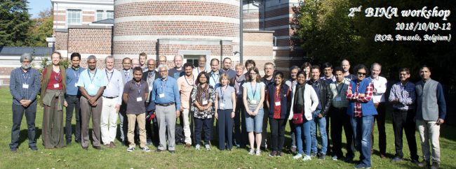

Activities

Workshops:
- 2018/10/09-12: 4-days international workshop (website; summary; proceedings)
- Title: “BINA as an expanding international collaboration”
- Host: ROB (Brussels, Belgium)
- Participants: 65 (from 5 different countries)
- Funding: BINA
- 2017/10/12: 1-day binational workshop (website)
- Title: “The ongoing activities of the BINA network”
- Host: ROB (Brussels, Belgium)
- Participants: 17 on site (from 2 different countries)
- Funding: BINA
- 2016/11/15-18: 4-days international workshop (website, summary, proceedings)
- Title: “Instrumentation and science with the 3.6-m DOT and 4-m ILMT telescopes”
- Host: ARIES (Nainital, India)
- Participants: 107 (from 8 different countries)
- Funding: BINA
Working Visits:
-
2019/03/24: 2 weeks work visit by a Belgian scientist to India
Hosts: IST (Mizoram) & NCRA-TIFR (Pune)
Participant: Michael De Becker (ULg)
Funding: BINA
Seminars:
-
2022/07/05: (09:00 UT) (titles, recording)
Title: "ARIES as an Indian BINA partner institute"
Speaker: Prof. Dipankar Banerjee (ARIES, Nainital, India)
Location: online
Steering Committee Meetings:
- 2022/01/01: (09:30 UT) (minutes)